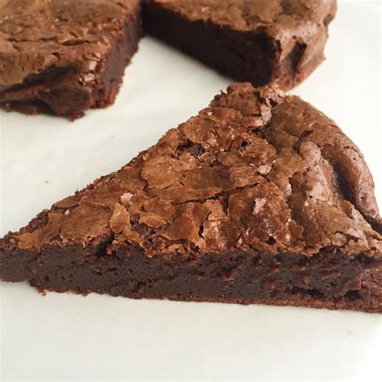

Fondant au chocolat

Ingrédients
- 1000 g de chocolat noir
- 700 g de beurre
- 25 oeufs
- 900 g de sucre
- 400 g de farine
- 2 pincées de sel
Préparation
- Préchauffez le four à 180°C.
- Faites fondre dans un saladier en plastique le chocolat et le beurre au micro-ondes en arrêtant et mélangeant toutes les 30 secondes.
- Pendant ce temps : dans un grand saladier en inox, battre les oeufs en omelette avec le sucre.
- Ajoutez la farine et le sel. Attention aux grumeaux.
- Incorporez le mélange de chocolat fondu.
- Filmer un moule avec du papier sulfurisé.
- Versez la préparation dans le moule.
- Enfournez pour 12 à 15 minutes.